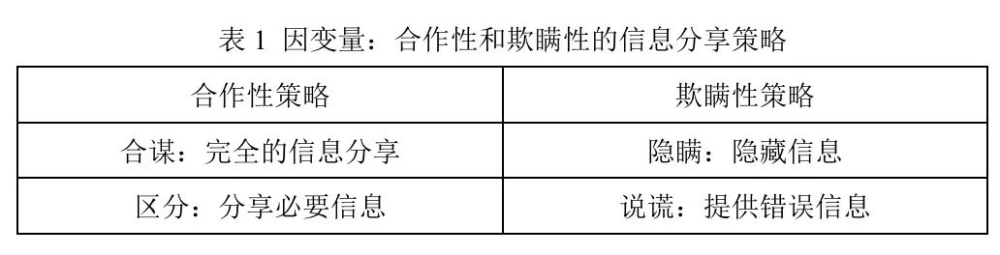
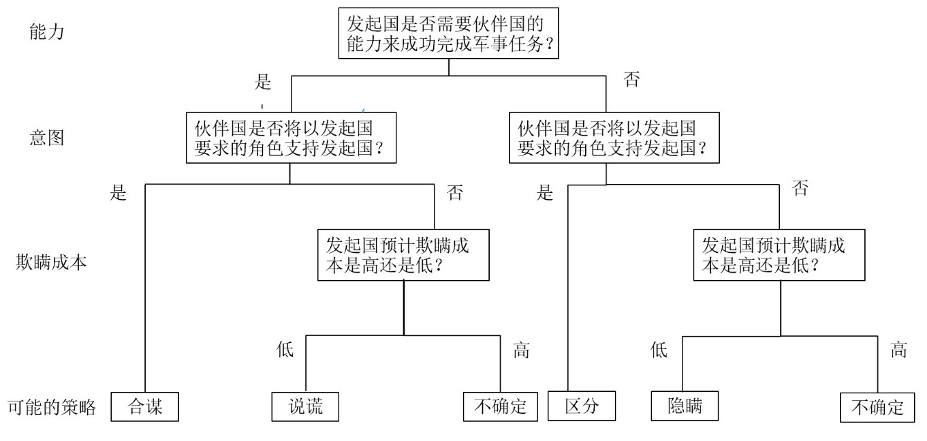
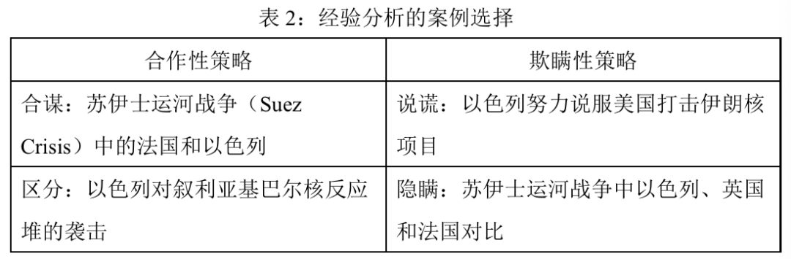
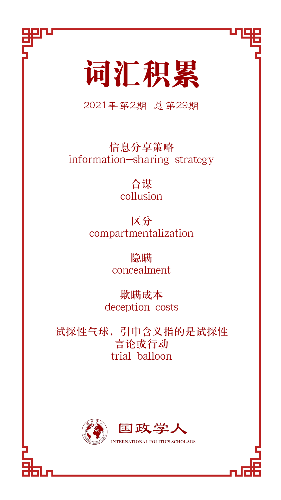

收录于合集 #理论研究 96个

作品简介
【作者】 Melinda Haas是普林斯顿大学政治学系的博士生候选人。Keren Yarhi- Milo是哥伦比亚大学政治学系和国际与公共事务学院Arnold A. Saltzman战争与和平研究院教授，研究领域为国际安全、外交决策、国家间沟通和危机谈判、情报与美国中东政策。
【编译】 王川（国政学人编译员，吉林大学公共外交学院本科生）
【校对】 谢菁
【审核】 施榕
【排版】 毛雅欣
【美编 】方引弓
【来源】 Melinda Haas, Keren Yarhi-Milo. To Disclose or Deceive? Sharing Secret Information between Aligned States. International Security , 2021, 45(3), 122-161.
【归档】 《国际关系前沿》2021年第2期，总第29期。
期刊简介
《国际安全》(International Security) 是经过国际和国家安全领域同行审议的顶级学术期刊，其刊发的论文主题涉及广泛，涵盖战争与和平等传统安全问题，以及环境、人口、人道主义、恐怖主义等新的安全议题。期刊创刊于1976年，由哈佛大学贝尔弗科学与国际事务中心 (Belfer Center for Science and International Affairs at Harvard University) 编辑，麻省理工学院出版社 (MIT Press) 出版，每年四期。根据Journal Citation Reports显示，该杂志2019年影响因子为5.432。
披露还是欺瞒？
结盟国家之间秘密信息的分享
To Disclose or Deceive?
Sharing Secret Information between Aligned States
Keren Yarhi-Milo
Melinda Haas
内容提要
为什么结盟的国家有时会向对方披露关于其武力使用的秘密信息，而有时则选择欺瞒其伙伴国？实施武力计划的国家可以在四种信息分享策略中做出选择：合谋、区分、隐瞒和说谎。存在三个会影响上述四种策略选择的主要因素：第一，国家对是否需要伙伴国的能力来成功完成军事任务的评估；第二，国家对伙伴国是否愿意以自己所要求的角色来支持本国的认知；第三，国家对不完全告知其伙伴国相关信息的预期欺瞒成本。本文通过几个案例说明了国家如何在上述四种策略中做出选择，包括以色列、英国与法国在苏伊士运河危机期间对埃及动武的决定（法以合谋；对美隐瞒），2007年以色列轰炸叙利亚核反应堆（区分策略）以及2010年至2012年以色列考虑是否轰炸伊朗核反应堆（说谎策略）。这些策略不仅会影响同盟内部的克制行为，还有助于理解盟国之间的欺瞒和保密现象。
文章导读
01
披露还是欺瞒？
一旦决策者决定对目标国使用武力，就会面临一个两难选择：是否应该与盟国分享有关其意图和计划的信息？或者，它是应该对伙伴国保密还是故意向伙伴国提供虚假信息？
作者在文中主要考虑了两类国家，一是希望对目标国使用武力的发起国，二是有可能协助发起国的伙伴国。作者的研究考察了发起国是否选择分享关于其武力实施的信息，这一武力的使用发生在发起国的国界之外，会直接或间接地影响伙伴国的安全利益，且发起国不希望向其目标国公开。
1. 范围条件
在提出理论之前，作者首先明确了理论所涉及的情况和条件。
首先，该理论适用于进攻性武力的有限使用，这些武力的使用在行动开始之前乃至行动发生后都是保密的；
第二，该理论适用于所计划的武力使用对伙伴国安全利益有影响的情况；
第三，作者关心的是特定环境下的均势而非一般的均势，即发起国在特定的环境下，针对特定的目标，是否具有成功完成其任务的军事能力。
最后，作者关心的既不是发起国对伙伴国的支持或能力的评估是否正确，也不是它将面临的欺瞒成本，更不是任务是否成功，而是这些主观评估是否以及如何影响发起国选择信息分享策略（information- sharing strategy）。
2. 信息分享策略
作者详细介绍了发起国在考虑使用进攻性武力时可以采取的四种信息分享策略，确定了 两种合作性的策略（cooperative strategies）：合谋（collusion）和区分（compartmentalization），两种欺瞒性的策略（deceptive strategies）：隐瞒（concealment）和说谎（lying） （见表1）。

这些信息分享策略涉及不同程度的信息分享。一种极端的做法是 合谋，即发起国与其伙伴国完全分享其对第三方使用武力的秘密军事计划，包括攻击的性质、时间和范围 。这种选择为发起国带来了潜在的重大利益和风险。伙伴国可以给发起国提供物质利益，如协助规划或执行攻击，或提供掩护、情报和后勤支持，以及非物质利益，如为发起国的武力使用提供合法性来源。同时，发起国还必须考虑到与伙伴国分享信息的潜在风险，包括伙伴国可能会破坏性地（有意或无意地）泄露信息，从而危及军事任务的成功。此外，一旦掌握了情报，伙伴国可能会设法强行要求改变发起国的计划，从而削弱发起国对任务的自主权。伙伴国可以通过采取经济制裁等强硬手段进一步胁迫发起国，还可以选择破坏任务，削弱发起国取得成功的能力。
区分策略，即发起国只向其伙伴国提供有限的信息，可减轻与合谋有关的一些风险 。一方面，发起国可以选择有选择性地分享其意图，而不透露行动细节，以防止意外泄密。另一方面，发起国也可以选择与其伙伴国分享行动细节，以显示出积极的态度，而不透露与任务有关的完整的外交政策目标。然而，区分策略可能会招致伙伴国的进一步审查。因此，虽然区分策略减少了与伙伴国分享秘密信息所固有的一些潜在损失和丧失自主权的风险，但并没有完全消除这些风险。
作者还指明了两种欺瞒性策略。第一种是发起国对伙伴国完全隐瞒信息。 隐瞒，指的是发起国不分享信息，让伙伴国完全不知道其意图 。隐瞒对发起国有利的原因是，它有可能会防止伙伴国破坏任务或限制发起国，并减少行动前泄漏的风险。然而，与合谋和区分相比，隐瞒会带来其他类型的成本。一旦秘密行动暴露，特别是当发起国的行动干涉了伙伴国的外交政策，完全的隐瞒就有可能遭到伙伴国政治或外交上的报复。事实上，如果伙伴国认为它本应该被告知这一行动，它可能会让发起国付出“欺瞒成本”（deception costs）。欺瞒成本指的是发起国在实行任务前可以预计到的，如果被发现说谎（或向伙伴国隐瞒信息），它将面临的声誉、物质、外交或政治成本。
第二种欺瞒性策略—— 说谎，指的是发起国选择向伙伴国传达不真实的说法，目的是为了欺瞒或给伙伴国留下关于其计划或意图的虚假或误导性的印象 。说谎可能涉及到发起国与其伙伴国分享的一些（但不是全部）信息。例如，发起国可以提供关于预期行动目标的虚假信息，但提供关于时间的真实信息。作者认为说谎是确保伙伴国支持发起国的军事任务并愿意扮演发起国所要求的角色的一种手段。谎言可能在任务实行之前或之后被揭穿，但关键是发起国会在任务准备期间使用这种信息分享策略。
说谎可能涉及两种类型的虚假信息。第一类涉及关于发起国意图或能力的虚假秘密信息，例如谎报其真实的军事实力或任务目标。第二类涉及发起国谎报关于其他国家能力或意图的情报。
3. 信息分享策略的成因
作者认为发起国对信息分享策略的选择取决于以下几点：
第一，发起国是否需要伙伴国的帮助来完成其军事任务 。这个问题的答案可能会因任务类型和发起国在特定环境中的具体能力不同而不同。如果认为伙伴国的帮助是必要的，在所有其他条件相同的情况下，如果发起国选择继续实行任务，它更有可能与伙伴国分享信息。
第二，发起国必须评估伙伴国对以发起国希望的形式进行合作的反应 。如果发起国评估的结果是伙伴国愿意担任其所要求的角色，在所有其他条件相同的情况下，发起国应该更有可能与之分享信息。另一方面，如果发起国认为其伙伴国完全不愿意担任所要求的角色，那么，发起国则不愿分享信息。在这种情况下，发起国更有可能选择欺瞒性的信息分享战略。
此外，如果发起国评估的结果是伙伴国不太可能反对参与，也不会破坏任务，但也不太可能担任发起国希望它所担任的角色，发起国则必须确定其是否能够说服伙伴国担任其所希望的角色，如果能，就采取合作性的信息分享策略，如果不能，则选择欺瞒性的信息分享策略。
为了衡量伙伴国可能的反应，发起国可能会使用试探性言论或行动（trial balloon），其形式是向媒体匿名泄密，或通过非正式特使之间的非正式对话，以衡量伙伴国的反应。
第三，发起国需要评估如果它选择隐瞒或说谎，预计会产生的由伙伴国施加的欺瞒成本。
发起国可能会从几个方面来确定是否会产生成本，以及会产生什么类型的成本：1）发起国和伙伴国之间过去在类似问题上的互动；2）伙伴国对其他国家欺瞒行为的反应；3）通过试探性言论或行动来进行评估；4）伙伴国对其施加欺瞒成本的实际能力。
不同的发起国可能会使用不同的指标来评估可能的欺瞒成本。考虑到这一点，作者假定，在其他条件相同的情况下，当发起国和伙伴国之间存在反复的互动，且具有高度的依赖性时，发起国可能会对欺瞒成本有较高的预期。另外，一些正式同盟可能有更多的制度化机制来分享特密信息，并对不遵守规则的情况设置较高的欺瞒成本。最后，如果任务失败或其他方面出现问题，造成伙伴国卷入困境的风险增加，伙伴国可能被迫分担一些失败的成本。在这种情况下，作者预计伙伴国会施加更高的欺瞒成本。
图1说明了因变量如何在一个阶梯式的理论中结合起来，从而产生了四种理想化的信息分享策略。

图一：发起国对伙伴国能力和意图，以及自身可能面临的欺瞒成本的评估，及由此导致的四种信息分享策略
**
**
4. 策略的转变
作者所考虑的是，从发起国考虑对目标国使用武力开始的信息分享，这包括所有内部审议，直至在实行(或放弃)军事任务之前信息分享策略的最终选择。
在此期间， 发起国的信息分享策略可能会因与若干因素有关的新信息的改变而改变 ：1)随着关于完成任务所需的具体能力的信息越来越多，发起国可能会改变其关于在没有伙伴帮助的情况下能否完成任务的评估；2)根据新的情报或从试探性言行中获得的信息，发起国可能会重新评估伙伴国是否同意担任其所希望的角色；3)如果发起国采取欺瞒性策略，它可能会重新评估可能发生的欺瞒成本。新的信息可能导致策略的转变。
只要关于采取何种信息分享策略的讨论是在内部进行的，而不是公开或已实施的，发起国就可以自由地在不同的策略之间转变。但是，一旦发起国以合作或欺瞒的方式与伙伴国接触，路径依赖就会成为策略转变的障碍。
02
案例研究
作者通过四个历史案例检验了上述理论。为了有更强的解释力，在大多数案例中，作者考察的考虑使用武力消除或减少安全威胁的发起国都为以色列，而其伙伴国对象都为美国。为此，作者也考察了美国和以色列在一段时间内的关系。作者还研究了1956年法国与以色列联手进攻埃及时的信息分享策略，在这一案例中，法国充当了发起国。在每一个案例中，作者都展示了作者提出的变量是如何塑造发起国的行为的，并对其是否应该与伙伴国分享信息以及分享什么信息的决策过程进行了追踪。

03
**
**
结论
本文对盟国间的信息分享策略进行了分类，提出了一个解释国家为何会选择不同信息分享策略的理论，并通过几个说明性的案例研究检验了本文观点。本文的研究结果凸显了世界政治中独特的、未被充分研究的议题，揭示了各国如何评估是否对核扩散国家使用武力，并为今后的研究提出了重要的方向。由于盟友之间的欺瞒和保密是一个研究不足的现象，考虑各种形式的欺瞒及其成功的概率是有启发意义的。
译者评述
当盟国决定使用武力时，哪些因素会影响盟国信息分享策略的选择？本文在区分四种信息分享策略的基础上，提出了三个影响因素：第一，能力评估，即发起国对是否需要伙伴国的力量以成功完成军事任务的评估。第二，意图认知，即发起国对伙伴国是否愿意以自己所要求的角色来支持本国的认知。第三，欺瞒成本，即发起国对不完全告知其伙伴国的预期欺瞒成本。本文在明确条件范围、因变量与自变量的基础上，提出了一个解释盟国信息分享策略选择的理论框架，对同盟内部的欺骗与保密现象进行了有益探讨，进一步完善了有关同盟问题的研究。同时，本文也反映了近年来同盟领域研究的一些特点，即同盟的研究问题越来越细化，同盟内部的一系列问题受到学者们更多关注。在理论建构上也越来越针对具体的经验困惑或问题，注重以问题为导向。
词汇整理

例句
1. information-sharing strategy ：信息分享策略
例句：We consider an information-sharing campaign to begin with the Initiator’s consideration of the use of force against the target state and to include all internal deliberations up to the final choice of an information-sharing strategy prior to the execution (or aborting) of the military mission.
2. c _ ollusion_ ：合谋
例句：At one extreme is collusion, in which the Initiator fully shares with its Partner its secret military plans to use force against a third party, including the nature, timing, and scope of the attack.
3. compartmentalization ：区分
例句：A strategy of compartmentalization, in which the Initiator provides only limited information to its Partner, mitigates some of the risks associated with collusion.
4. concealment ：隐瞒
例句：Concealment refers to situations wherein the Initiator does not share information and leaves the Partner completely in the dark about its intentions.
5. deception costs ：欺瞒成本
例句：Deception costs refer to the expected reputational, material, diplomatic, or political costs the Initiator could anticipate, before the mission, that it would face as a result of being caught lying to (or concealing information from) its Partner.
6. trial balloon ：试探性气球，引申含义指的是试探性言论或行动
例句：To gauge the Partner’s likely reaction, the Initiator might use trial balloons in the form of anonymous leaks to the media or informal conversations between unofficial envoys to gauge the reaction of the Partner.
文章观点不代表本平台观点，本平台评译分享的文章均出于专业学习之用, 不以任何盈利为目的，内容主要呈现对原文的介绍，原文内容请通过各高校购买的数据库自行下载。

好好学习，天天“在看”
国政学人
支持学术公益与知识传播
微信扫一扫赞赏作者 __赞赏
已喜欢，对作者说句悄悄话
取消 __
发送给作者
发送
最多40字，当前共字
上一页 1/3 下一页
长按二维码向我转账
支持学术公益与知识传播
受苹果公司新规定影响，微信 iOS 版的赞赏功能被关闭，可通过二维码转账支持公众号。